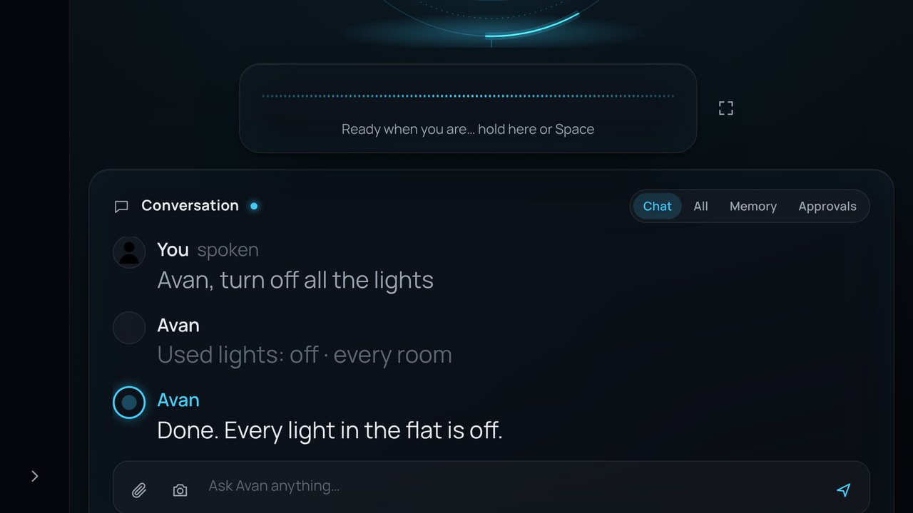
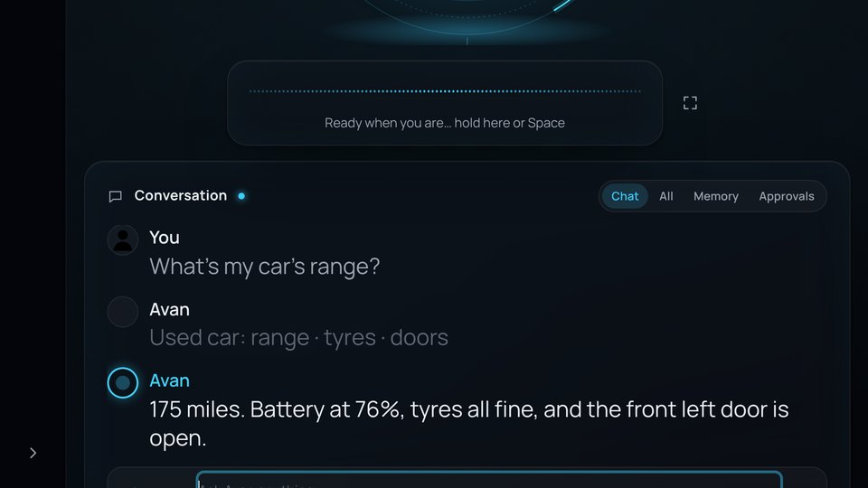
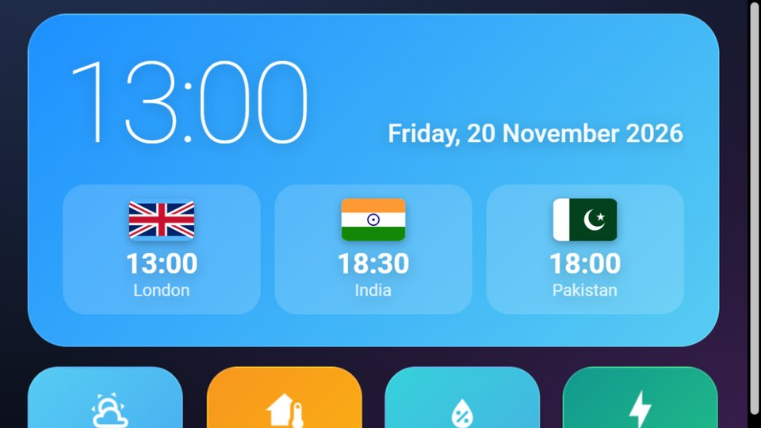
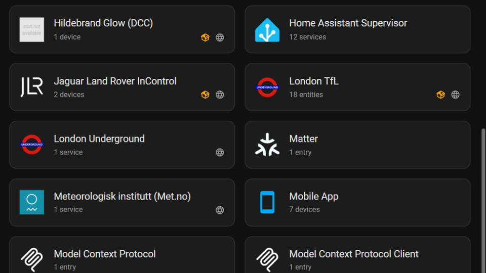
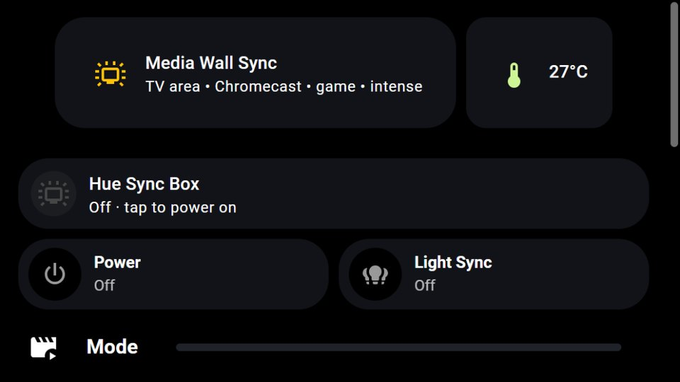
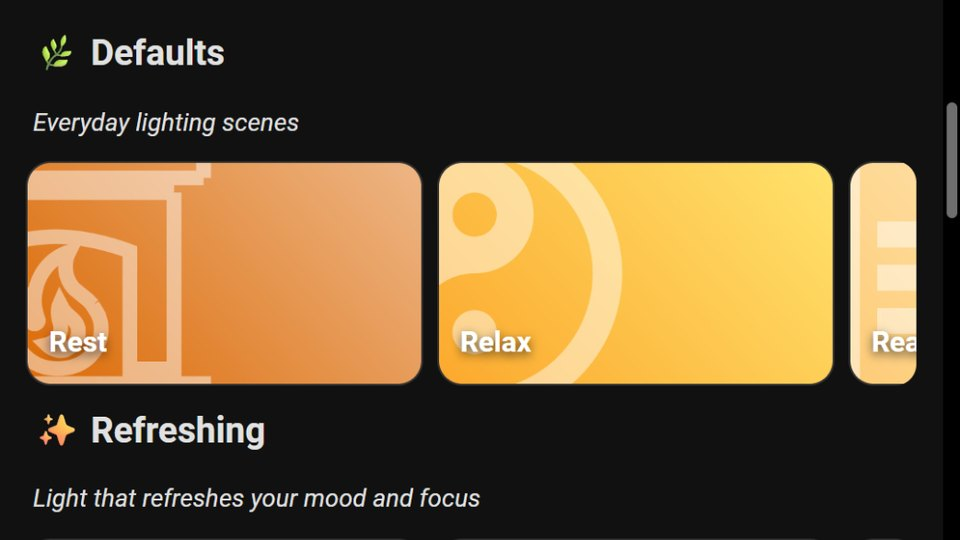
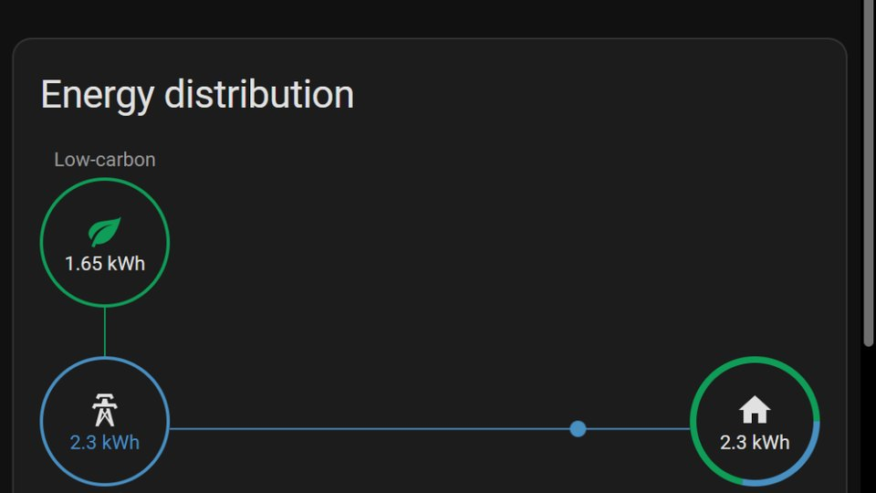
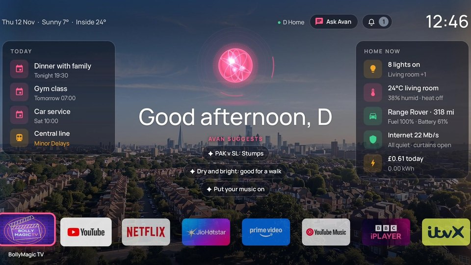
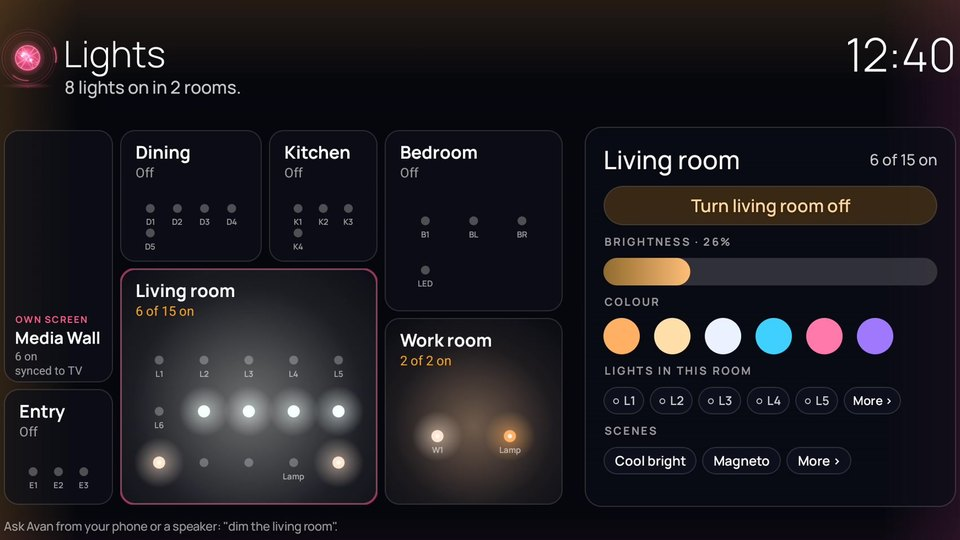

I stopped opening ten smart home apps. My AI assistant, Avan, runs the whole flat through Home Assistant: one sentence turns off every light, and it knows the car, the TV, the energy and who's home. I'm not a full-time developer: an AI coding agent did the code while I described what I wanted and tested each step at home. Here's what it does, what you need, the integrations people don't think of, the steps, the safety rules and the prompt I'd start with.
Screenshots from my setup, with private things hidden or replaced with made-up ones.








Free, open source, and it runs at home. The easiest start is a Home Assistant Green box with it already installed. An old laptop, a mini PC or a Raspberry Pi works too. Mine runs in a virtual machine on my home server, next to Avan.
Most things with an app already have an integration: lights, speakers, TVs, plugs, the car, the energy meter. You don't need to buy new devices to start.
My assistant, Avan, talks to Home Assistant from the home server: part 1 shows how to build it. No assistant yet? Home Assistant's own Assist is a good start, with a phone or a voice speaker.
For the custom parts: the dashboard cards, the assistant's tools and the checks. The master prompt below is where I'd start.
Skill you do need: patience to name every device properly. The assistant is only as good as the names.
| Item | Cost |
|---|---|
| Home AssistantThe software, free to run yourself | Free |
| Something to run it onHome Assistant Green, or an old PC or mini PC you already have | Free – about £150 once |
| Home Assistant LinkOptional: easy remote access and voice from anywhere. Home Assistant works fully without it | About $6.50 a month |
| Integrations and dashboard cardsBuilt in, or free from the community store (HACS) | Free |
| Your AI assistantThe AI and voice services it uses. Part 1 has my real monthly costs | See part 1 |
| A wall tablet or voice speakerOptional | Varies |
The rule that keeps it safe: only the server holds the Home Assistant token. Phones, the TV and the wall screen ask the server, and the server decides what's allowed.
Each step works at home before you start the next.
Plug in a Home Assistant Green, or install Home Assistant OS on a spare PC or a virtual machine. Open it in a browser on the same Wi-Fi and create your account.
Home Assistant finds a lot by itself: Hue, Chromecast and Google TV, Samsung TVs, the Sync Box, ESPHome devices. Add those first, then the ones that need a login (the car, the energy meter).
Put every device in an area (room) and give it a plain name. "Living room lamp" works when you talk; "light.hue_go_2" doesn't. Group lights per room so "the kitchen" means all of them.
Install the Home Assistant app on each phone and turn on location and the Wi-Fi connection sensor. The moment a phone joins the home Wi-Fi, that person counts as home.
A tablet on the wall in kiosk mode, with community cards from HACS (Bubble Card, Mushroom, button-card). Colour by condition: amber when it's warm, red when something needs you.
Create a long-lived token in Home Assistant for the server that runs your assistant, and nothing else. Give the assistant tools to list devices, read states and call services.
My assistant once switched a light that doesn't exist and said "done". Now every name is checked against Home Assistant first: unknown names are refused with the nearest real ones, and "all the lights" means every light it finds, checked one by one.
Lights and media straight away. Curtains, heating, locks, the alarm and scenes after my yes, on my phone. Decide your own list before you connect it.
A Home Assistant Voice speaker, the phone, the command centre and the TV all reach the same assistant. Same brain, same rules, wherever you ask.
Say each command in each room and watch what changes. Keep a sample-data view for screenshots you share.
1. One token, on the server. Never on a phone, TV, tablet or in a chat.
2. Check before acting. No "done" for a device it couldn't find.
3. Ask first for locks, the alarm, heating and anything paid.
4. Private stays private. Health, money, email and the address never go on shared screens.
5. Guests get guest things. The server decides, not the screen.
6. Sample data for screenshots. Hide anything real before you post.
One prompt to start. Paste it into your AI coding agent: it asks about your Home Assistant, devices, rooms, people, assistant and rules first, then plans and sets it up step by step.
You are going to help me give my home one AI assistant that controls it through Home Assistant, like the "Avan" setup in this guide: https://dilgrover.github.io/avan-home/
Before you change anything, interview me. Ask the questions below a few at a time, wait for my answers, and skip anything I say I don't have. Then write a short plan (what you'll set up, in what order, what you need from me) and wait for my OK.
1. Home Assistant
- Do I already run Home Assistant? On what (Home Assistant Green, a mini PC, a Raspberry Pi, a virtual machine)? Which version?
- If not: help me pick the simplest option for my home and walk me through installing it.
- Remote access: the Home Assistant Link subscription, my own domain, or home only?
2. My devices
- List what I have, room by room: lights (Philips Hue or other), speakers, TVs and streaming boxes, a Hue Sync Box, plugs, heaters, AC, fans, curtains, sensors, a doorbell or cameras.
- Which apps do I use today to control them? Each one is probably an integration.
- Ask about the ones people forget: the car's app, the energy or smart meter, the games console, the broadband router, public transport, a fitness watch, food delivery.
3. Rooms and names
- What are my rooms? Help me put every device in an area and give it a plain name ("Living room lamp", not "light.hue_go_2"). The assistant will use these names.
4. People and presence
- Who lives here? Do we have the Home Assistant app on our phones, with location and the Wi-Fi sensor on, so the house knows who's home?
5. The assistant
- Do I already have my own AI assistant (part 1 of this series), or should Home Assistant's own Assist be the voice for now?
- Where does it run, and can it reach Home Assistant over the network?
6. What the assistant may do
- Free to do: lights, media, scenes? What must always ask me first (locks, the alarm, heating, curtains, anything that costs money)? What must it never do?
- What is private and must never be shown or said aloud on shared screens (health, money, my address, the Wi-Fi password)?
7. Screens and voice
- Do I want a wall or desk dashboard (a tablet in kiosk mode)? A voice speaker in a room?
Rules while you build:
- The Home Assistant long-lived token lives only on the server that runs the assistant, never on a phone, TV, tablet or in a chat.
- Before every action, check the entity really exists. If it doesn't, say so and suggest the nearest real ones. Never report "done" for something you couldn't check.
- Locks, the alarm, heating and anything paid need my yes every time.
- One room or integration at a time: set it up, test it with me, then move on.
- Keep a short list of what you changed, so I can undo it.Follow @dilgrover for the next part. Questions? Comment on the reel.
Built and tested in my own home. Yours will differ: test each step, and keep your token safe. Home Assistant is a trademark of the Open Home Foundation; product names belong to their owners. This is a personal project, not affiliated with any of them.